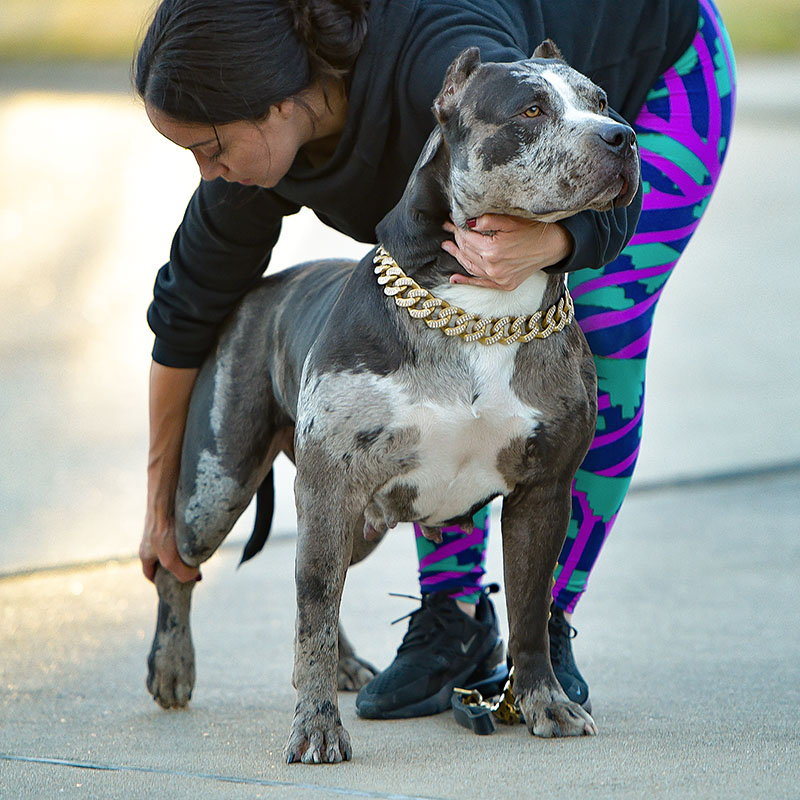

Sarabi
This XL American bully female has an amazing structure, shiny lilac tri coat and perfect family temprement, nice with kids and adults.
AGE: 1.5 year
WEIGHT: 110Lb
HEIGHT: 23
REG: UKC , ABKC
COLOR: LILAC TRI


This XL American bully female has an amazing structure, shiny lilac tri coat and perfect family temprement, nice with kids and adults.
AGE: 1.5 year
WEIGHT: 110Lb
HEIGHT: 23
REG: UKC , ABKC
COLOR: LILAC TRI
Pit bulls / Bully come in a variety of colors that make them very rare and pursued pitbull puppies for sale. One such great and extremely beautiful color that you can get a Pit bull in is the lilac and Lilac Tri color. Lilac pitbull puppies is somewhat more violet but mild in tone like lilac flowers. The tri in pitbull puppies refers to the rare tri color pattern seen on bulldogs / Pit Bull / Bullies. American Bully pitbulls have the tan point gene and are very rare but highly sought after for Pit bull / Bully lovers. The lilac color on pitbull puppies can also come in a white-tan combo. It is very popular for pit bull owners and they combine different shades. A Swag Kennel just added amazing Lilac Tri pitbull bully puppy addition – XXL Pit bull / Bully Puppy “Maya”. Maya is American Bully Pitbull puppy in lilac tri color coat conquered our hearts from day 1. Spoiled and loved young pitbull bully puppy has a lot of time to grow but we already can see her perfect structure and muscular pitbull puppy body.Thats no doubt that she will produce the best pitbull puppy for sale with excellent structure.


AGE: 2 year
WEIGHT: 98Lb
HEIGHT: 24
REG: UKC , ABKC
COLOR: LILAC TRI

XXL American Bully female with extreamely huge muscles. Perfect family temprement, nice with kids and pets.

AGE: 3 year
WEIGHT: 105Lb
HEIGHT: 23
REG: UKC , ABKC
COLOR: Champagne color

Pit bulls / Bully come in a variety of colors that make them very rare and pursued pitbull puppies for sale. One such great and extremely beautiful color that you can get a Pit bull in is the lilac and Lilac Tri color. Lilac pitbull puppies is somewhat more violet but mild in tone like lilac flowers. The tri in pitbull puppies refers to the rare tri color pattern seen on bulldogs / Pit Bull / Bullies. American Bully pitbulls have the tan point gene and are very rare but highly sought after for Pit bull / Bully lovers. The lilac color on pitbull puppies can also come in a white-tan combo. It is very popular for pit bull owners and they combine different shades. A Swag Kennel just added amazing Lilac Tri pitbull bully puppy addition – XXL Pit bull / Bully Puppy “Baby Face”. Baby Face is American Bully Pitbull puppy in lilac tri color coat conquered our hearts from day 1. Spoiled and loved young pitbull bully puppy has a lot of time to grow but we already can see her perfect structure and muscular pitbull puppy body.Thats no doubt that she will produce the best pitbull puppy for sale with excellent structure.
AGE: 3 years
WEIGHT: 103Lb
HEIGHT: 23
REG: UKC , ABKC
COLOR: Blue TRI

Khaleesi – XXL American Bully Pitbull. She was born and raised by our XL Bully Home inc. We call her our baby girl despite on the fact that she weights over 120lb in 2 years old. One of the Best XXL Pitbull Bully produced by ManMade kennels XL Pitbull Milady and Bossy kennels XXL Blue tri Bully Staxx. Khaleesi is definitely on her way to produce some of the Biggest Pitbull Puppies on Earth with amazing family temprement. If you are looking for size, bones, good bloodline, great FAMILY TEMPERAMENT and more that represent HIGH quality XL PITBULL BULLY DOG – you're at the right place. Our lady-giant XXL BULLY FEMALE Khaleesi will have a few more breedings in next couple years. We are expecting multiple BULLY PIT BULL XL PUPPIES for sale: MERLE TRI, MERLE, CHAMPAGNE, CHOCOLATE , FAWN, BLUE PIT BULL BULLY PUPPIES FOR SALE.


AGE: 4 YEARS
WEIGHT: 125Lb
HEIGHT: 23”
REG: UKC , ABKC
COLOR: CHAMPAGNE (tri carrier)
Sansa is a Tri Merle Pitbull Bully, it's one such great and extremely beautiful color that you can get a PITBULL BULLY in is MERLE but it's really hard to find HIGH QUALITY XL MERLE colored PIT BULL BULLY PUPPIES for sale. Are you looking for XL XXL MERLE AMERICAN PITBULL BULLY PUPPIES AVAILIABLE ? We got you covered! Sansa is our keeper and first pick Merle Pitbull Bully female from XL Merle Pitbull Bully Phantom and Champagne color XXL Pitbull Bully Khaleesi breeding. She inherited amazing XL Pitbull family temperament from her mom and great athletic pitbull structure from dad Swag's Phantom. That girl is very built XL Pitbull with incredible drive and Unique Black Merle tri markers. So proud of XL Bully Home production.

AGE: 2 year
WEIGHT: 105Lb
HEIGHT: 24”
REG: ABKC
COLOR: BLACK MERLE TRI
Nirobi is a Chocolate Tri American Bully, it's one such great and extremely beautiful color that you can get a PITBULL BULLY in is Chocolate tri but it's really hard to find HIGH QUALITY XL Chocolate tri colored PIT BULL BULLY PUPPIES for sale. Are you looking for XL XXL Chocolate AMERICAN PITBULL BULLY PUPPIES AVAILIABLE ? We got you covered!

AGE: 2 year
WEIGHT: 100lb
HEIGHT: 23”
REG: ABKC
COLOR: Chocolate tri

It is really hard to find these unique XL MERLE colored pit-bull puppies for sale and great care must be performed when the dog is bought. Take a minute to look at our Black Merle Bully female Storm, she has very RARE marble MERLE pattern coat for pitbull bully dogs. Beautiful structure and wild color markings takes after the one and only XL Merle Bully Pit Bull Phantom. Amazing pedigree (XL Bully Home, Bossy Kennels, Manmade kennels, Dela Cruze) and family temperament. XL Bully Home is the most successful, respectful, and responsible XL Bully Home breeders who can guarantee you that their dogs pitbull bully were bred safely. The bloodlines of our American BULLY / Pitbulls are perfect and not cross-bred; plus the pitbull puppies that come from their breeding will be friendly and great for the home. The Best XL merle-colored pit-bulls / bully will come from people who know what they are doing, making beautiful pitbull puppies that among the most charming in the world. Merle, Merle Tri American Bully / Pitbull registerable thru ABKC as an American Bullies.s

AGE: 2 years
WEIGHT: 107Lb
HEIGHT: 25”
REG: ABKC
COLOR: Black Marble Merle
MILADY - One of the Largest XL Champagne PITBULL Bully Female in the World! Mother of the famous XXL PIT BULLS twins "Drogo" and "Khaleesi”. Foundation American bully female, the greatest bully dog on Earth. She is super sweet and gentle PIT BULL DOG who has the BEST FAMILY TEMPERAMENT as you can wish. Milady was purchased from manmade kennels when was posted as xl pitbull puppy for sale. She is our best friend, partner and big part of our life. MiLady has produced amazing XL MERLE PIT BULL PUPPIES in her last breeding with our XL MERLE BULLY DOG Phantom. Their MERLE BULLY PUPPIES for sale was shipped WORLDWIDE. Follow our news to see more pictures and videos of her.
AGE: 5 YEARS
WEIGHT: 95Lb
HEIGHT: 21”
REG: UKC , ABKC
COLOR: CHAMPAGNE
The best combination of structure and color. This liac Queen has produced beautiful pups.
AGE: 4 YEARS
WEIGHT: 85Lb
HEIGHT: 21”
REG: UKC , ABKC
COLOR: LILAC TRI